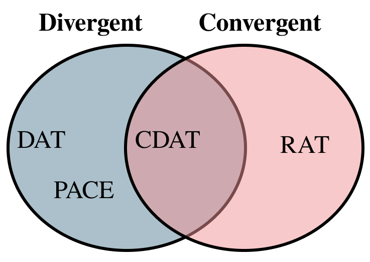
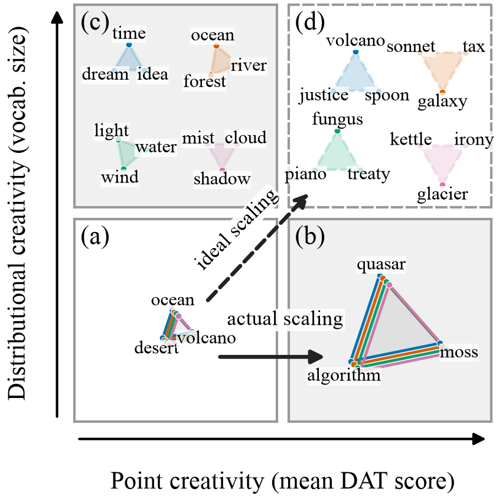
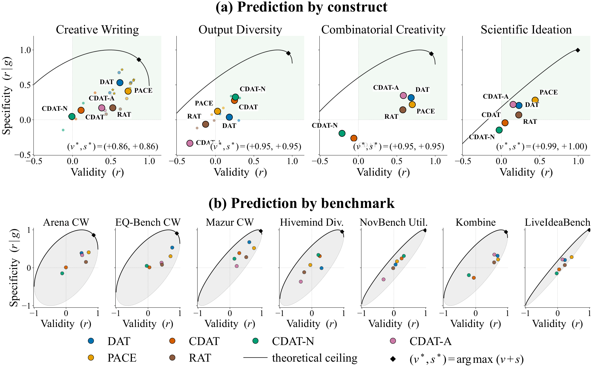
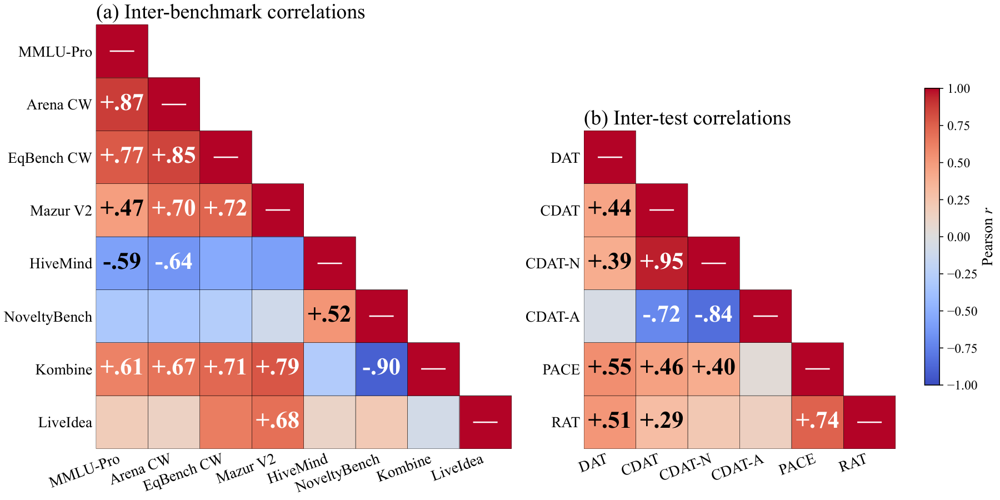
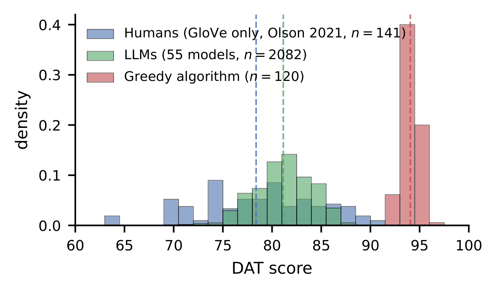

NeurIPS 2026
NeurIPS 2026
Psychological tests built on semantic distance, like the Divergent Association Task (DAT), are now routinely given to LLMs to measure their “creativity.” We test whether they actually predict creative achievement across 54 LLMs and four constructs, scoring each test on validity (correlation with a benchmark) and specificity (correlation after removing what general capability already predicts). No test predicts output diversity: producing one highly divergent answer is not the same as producing many distinct ones, a pattern we call jagged creativity. The Remote Associates Test is valid only because it tracks general capability. The DAT is the best predictor of creative writing, but no single test predicts every construct, and none predicts scientific ideation.
Measuring the creativity of large language models (LLMs) is essential for designing methods that can improve creativity and for enhancing our scientific understanding of this ability. To accomplish this, it has become common in recent years to administer semantic distance tests of human creativity to LLMs. Although these tests provide a convenient and fully automated way to score aspects of “creativity,” their validity as measures of machine creativity has not been established, and these tests already show limited external validity among human populations. To address this problem, we conduct the first large-scale, systematic study assessing the effectiveness of semantic distance tests for predicting the creative achievement of LLMs across four target constructs: (a) creative writing, (b) output diversity on open-ended prompts, (c) combinatorial creativity, and (d) scientific ideation. We score each test on two criteria (validity and specificity), and derive a theoretical limit for the maximum attainable specificity and validity a test can achieve. We find that: (1) No test is a significant predictor of output diversity, suggesting that point creativity, the ability to produce one highly divergent response, and distributional creativity, the ability to produce distinct responses across repeated samples, may dissociate in LLMs, a pattern we call jagged creativity. (2) The Remote Associates Test is valid on creative writing only because it loads on general capability, and is not a specific measure of creativity in LLMs. (3) The Divergent Association Task best predicts creative writing, but no single test predicts all constructs well, and none of the tests is a good predictor of scientific ideation ability. In summary, our results prescribe caution when applying psychometric tests and tasks validated among human populations to LLMs.

The tests span the divergent–convergent axis. The DAT and PACE reward reaching distant words; the RAT asks for the one word that links three cues; the CDAT asks for distant words that must all stay relevant to a cue. Example prompts and responses:
Divergent Association Task (DAT). Generate 10 nouns maximally different from each other.
Response: ocean, mathematics, hammer, justice, molecule, symphony, volcano, laughter, friction, taxonomy
Parallel Association Chain Evaluation (PACE). Starting with the seed “rock”, produce three 20-word association chains in which each word associates only with the previous word.
Response (chain 1 of 3): rock → stone → pebble → beach → sand → hourglass → time → clock → alarm → fire → smoke → cigarette → tobacco → leaf → tree → bark → dog → collar → shirt
Conditional Divergent Association Task (CDAT). Generate 10 nouns associated with “rock” that are maximally different from each other.
Response: stone, guitar, music, geology, cliff, mineral, foundation, cradle, concert, pebble
Remote Associates Test (RAT). What single word can be combined with each of “cream”, “skate”, and “water” to form a compound word or common phrase?
Response: ice




Validity is the Pearson correlation r between a test and a benchmark across models. Specificity is the semi-partial correlation r|g after removing what MMLU-Pro already predicts. Bold cells are significant (p < .05). Hover a cell for p and n.
Overall block: mean z-score across GloVe, FastText, and Sentence-BERT. The RAT is scored by accuracy. Stars: * p < .05, ** p < .01, *** p < .001.
Mean ± SEM for every model on every test. DAT is scored under GloVe, the CDAT family under Sentence-BERT, and PACE under FastText; the RAT is percent correct. CDAT is novelty at the temperatures that pass the appropriateness gate (“–” if none did). Click a column to sort.
@inproceedings{schapiro2026semantic,
title={Do Semantic Distance Tests Actually Predict Creativity in Large Language Models?},
author={Samuel Schapiro and Alexi Gladstone and Jonah Black and Heng Ji},
booktitle={Advances in Neural Information Processing Systems (NeurIPS)},
year={2026},
url={https://openreview.net/forum?id=VflIpUsCvC}
}